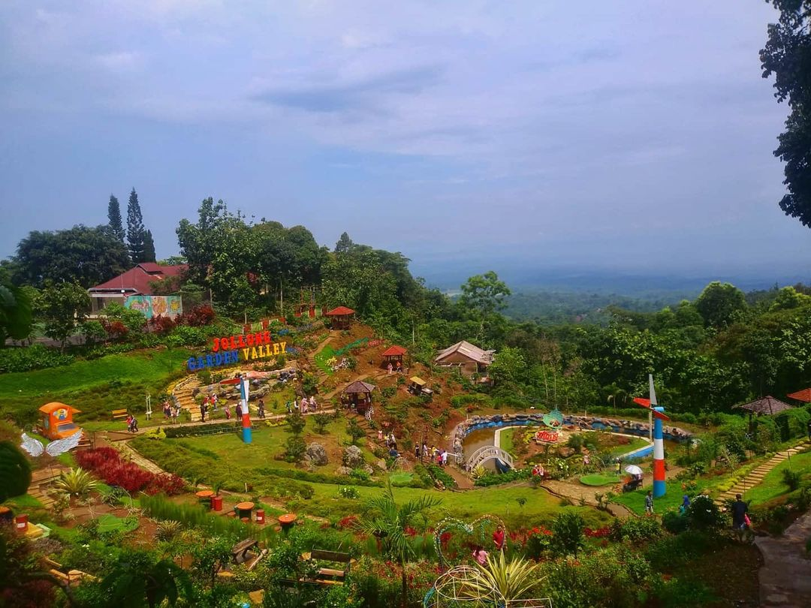
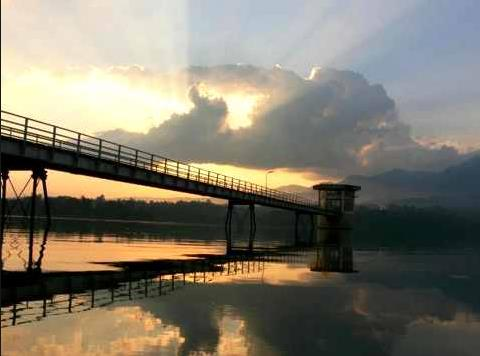

- Desa Wisata Jolong Pati 
- Goa Pancur Jimbaran
- Goa Pancur Jimbaran 
Desa Wisata Jolong Pati ini adalah merupakan sebuah tempat wisata jolong pati yang akan membuat kamu bolak balik datang ke tempat ini. Desa Wisata yang terkenal akan bumi perkemahannya yang menarik dan juga perkebunan kopi yang luas menjadikan tempat wisata jolong pati ini tidak pernah sepi akan pengunjung. Di tempat ini kamu juga akan mendapati air terjun grenjengan yang memiliki pamandangan yang tidak bisa di jelaskan oleh kata-kata.
Lokasi : Sitiluhur, Gembong, Jollong, Sitiluhur, Gembong, Kabupaten Pati, Jawa Tengah 59162

Goa Pancur Jimbaran ini adalah merupakan sebuah tempat wisata di kabupaten pati yang memiliki banyak keistimewaan sendiri. Salah satu dari keistimewaan tempat wisata menarik di pati ini adalah merupakan sebuah tempat wisata yang kaya akan cerita sejarah, misteri hingga mitos yang masih melegenda di kalangan warga setempat. Namun terlepas dari semua itu, soa pancur ini adalah merupakan goa yang indah dengan berbagai pemandangan alam yang mempesona dan kamu juga dapat mandi di depan mulut goa pancur ini yang di percaya oleh masyarakat sekitar akan membuat menjadi lebih awet muda.
Lokasi : Jimbaran, Kayen, Sawah, Jimbaran, Pati, Kabupaten Pati, Jawa Tengah 59171
Waduk Gunung Rowo ini adalah tempat wisata baru di pati yang dulunya adalah sebuah tempat panampungan air yang di gunakan untuk pengairan area pertanian di kabupaten Pati ini. Tempat yang masih terjaga keasriannya dengan baik dan juga pemandangan alamnya yang indah membuat waduk gunung rowo ini kini tidak hanya berguna sebagai tempat penampungan air melainkan tempat wisata fovorite yang wajib anda kunjungi ketika berada di kabupaten Pati.
Lokasi : Area Waduk Gunungrowo, Sitiluhur, Gembong, Pati Regency, Central Java 59162